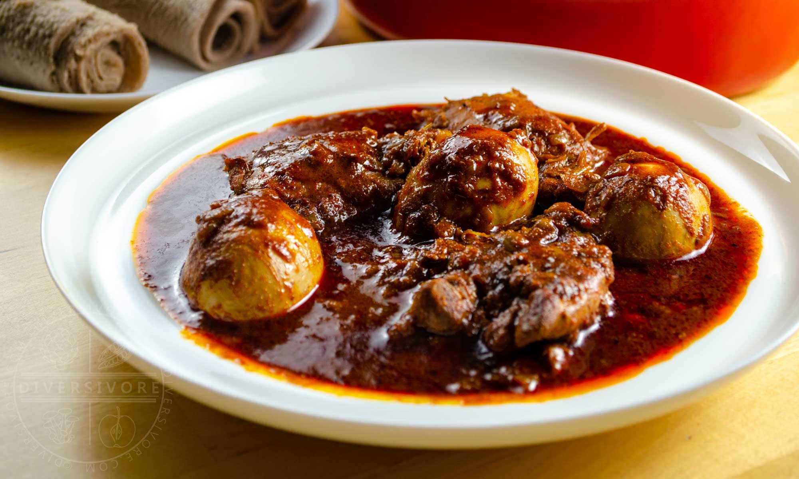

Doro-wot

Do you know doro-wot?
Doro Wot, often hailed as the national dish of Ethiopia, is a rich and flavorful chicken stew that holds a special place in Ethiopian cuisine. This hearty dish is characterized by tender chicken pieces simmered in a spiced onion-based sauce, enriched with berbere spice and niter kibbeh (a spiced clarified butter). Traditionally, Doro Wot is served with hard-boiled eggs and accompanied by injera, a spongy flatbread that complements its robust flavors.
Ingridents
- 2 to 3 pounds chicken legs and thighs, skin removed
- Juice of 2 limes
- Salt
- 3 tablespoons niter kibbeh (Ethiopian spiced butter)
- 3 large red onions, finely chopped
- 3 tablespoons minced garlic
- 1 tablespoon minced fresh ginger
- 2 to 4 tablespoons berbere spice mix
- 1 teaspoon freshly ground black pepper
- 1/2 teaspoon ground cardamom
- 1/4 teaspoon ground nutmeg
- 1/4 teaspoon ground cloves
- 1/4 teaspoon ground allspice
- 1 cup chicken broth or water
- 4 to 6 hard-boiled eggs, peeled
Steps to make good Doro-wot
- Prepare the Chicken: Place the chicken pieces in a bowl, add the lime juice and a generous amount of salt. Mix well and let it sit for about 30 minutes. This process helps to tenderize the meat and infuse it with flavor.
- Cook the Onions: In a large pot or Dutch oven, melt the niter kibbeh over medium heat. Add the finely chopped red onions and cook, stirring frequently, until they turn a deep golden brown. This may take up to an hour but is crucial for developing the stew's rich flavor.
- Add Garlic and Ginger: Stir in the minced garlic and ginger, cooking for an additional 5 minutes until fragrant.
- Incorporate Spices: Add the berbere spice mix, black pepper, cardamom, nutmeg, cloves, and allspice to the onion mixture. Stir well to combine and let the spices cook for a few minutes to release their aromas.
- Add Chicken and Broth: Place the marinated chicken pieces into the pot, coating them thoroughly with the spiced onion mixture. Pour in the chicken broth or water, ensuring the chicken is mostly submerged. Bring the stew to a simmer.
- Simmer the Stew: Cover the pot and let the stew simmer gently over low heat for about 45 minutes to an hour, or until the chicken is tender and cooked through. Stir occasionally to prevent sticking.
- Add Hard-Boiled Eggs: Gently add the peeled hard-boiled eggs to the stew, allowing them to warm through and absorb some of the flavorful sauce.
- Serve: Traditionally, Doro Wot is served over injera, the Ethiopian sourdough flatbread, which helps to balance the stew's spiciness and provides a delightful textural contrast.
Home